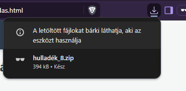
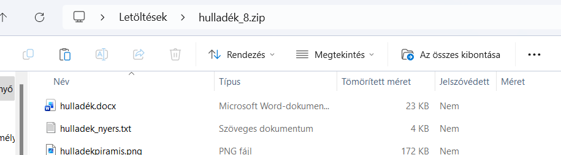
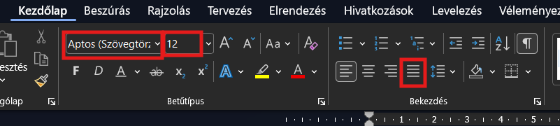

Ebben a dokumentumban az nkp-n található Hulladékgazdálkodás feladat részletes, lépésenkénti megoldását találod. A szükséges fájlok mind csatolva vannak és letölthetők ugyanúgy, mint az nkp-ról. Az eredeti feladatot és a hozzá tartozó leírást itt találod. Az én csatolmányom ettől annyiban különbözik, hogy van benne még egy Word-dokumentum is, amely az én órai munkám, vagyis ebben megvannak azok a dolgok, amiket közösen csináltunk. Ha a dokumentum alapbeállításait, a stílusok alkalmazását és módosítását már magabiztosan tudod, akkor dolgozhatsz abba, de kezdheted elölről is, hogy többet gyakorolj. Ha az órai munkát szeretnéd folytatni, AZ ELSŐ PONT, A LETÖLTÉS ÉS KICSOMAGOLÁS UTÁN ugorj a Lábjegyzet és a források megjelölése lépéshez! A tömörített mappát ide kattintva töltheted le.
Tömörített mappa letöltése és a fájlok kicsomagolása
Önálló feladat
Töltsd le a tömörített mappát, nyisd meg és bontsd ki a tartalmát! Kicsomagolás után alapértelmezés szerint megnyílik a kibontott fájlokat tartalmazó mappa. Fontos, hogy innentől ezekkel dolgozz, ne a tömörített mappában levőkkel, mert akkor nem fog minden megfelelően működni!
Részletes leírás lépésenként
Letöltés és kicsomagolás: kattints a fenti linken a tömörített mappa letöltéséhez! A letöltéseket általában a böngésző jobb felső részében ikon jelzi. Ha erre kattintasz, meg tudod nyitni a letöltött fájlt, de ha simán megnyitod a Fájlkezelőt, a Kezdőképernyő nevű (eredetileg megnyíló) nézetben alul, a fájlok közt is a letöltésed kell, hogy az első legyen.
A tömörített mappa olyan, mint egy dobozba csomagolt telefon. Könnyebb szállítani becsomagolva, de nem tudod használni – általában. Ahhoz, hogy minden megfelelően működjön, a tömörített mappát ki kell csomagolni. Megnyitás után (Windows 11-ben) csak annyi különbözteti meg látszólag egy sima mappától, hogy a menüsorban szerepel egy Az összes kibontása opció is.
Erre kattintva ki kell választani, hogy hova szeretnéd kibontani a tömörített mappát, vagyis, hogy hova pakolod ki a tartalmát. A legegyszerűbben a Tallózás gombra kattintva keresheted ki a mentés helyét. A megnyíló ablakban, mint bármyilyen mentéskor, ki tudod keresni bal oldalon az Ez a gép (vagy OTTHON a Dokumentumok) tárolót, majd a (saját felhasználóneved) H: meghajtót. Arra kell figyelni, elsősorban az iskolában, hogy ez olyan hely legyen, ahová tudsz írni, tehát a Munka meghajtó HELYETT választd mondjuk a saját H: meghajtódat!
Ha ezekkel végeztél, érdemes bezárni a tömörített mappát – amelyiknek a tetején látod azt, hogy Az összes kibontása, így nem fogod véletlenül összekeverni azzal, amelyiknek a dolgaival tudsz is dolgozni.


Dokumentum készítése, szöveg beillesztése, alapbeállítások
Önálló feladat
Nyisd meg a hulladek_nyers.txt fájlt, másold ki innen a szöveget és illeszd be egy üres Word-dokumentumba! Mentsd el a munkádat hulladék néven otthon a Dokumentumokba, a suliban a saját H: meghajtódon készített évfolyammappába!
A teljes dokumentumban állítsd a betűméretet 12 pontosra, a betűtípust Calibrire, a térközt mindenhol 0 pontosra, a sorközt szimplára! Kapcsold be az automatikus elválasztást!
Részletes leírás lépésenként
Nyers szöveg megnyitása, kijelölése és másolása: a kibontott mappában (NEM a tömörítettben!) nyisd meg a hulladek_nyers.txt szöveges dokumentumot! Ne zavarjon, hogy melyik program nyitja meg: amíg el tudod olvasni a tartalmát, addig a számítógép is el tudja!
Jelöld ki a teljes szöveget (ctrl + a), majd másold le (ctrl + c)! Látható változás ekkor nem történik, de a szöveg a Vágólapra kerül, ahonnan majd be tudod illeszteni.
A Vágólap (angolul Clipboard) egy átmeneti tároló, amelybe a ctrl + c vagy a ctrl + v billentyűkombinációval juttathatok adatot. Lényegében bármi kerülhet ide: szöveg, kép, egy teljes fájl... A cél helyre a ctrl + v billentyűkombinációval illesztheted be a vágólap tartalmát. Windows 11 alatt be lehet kapcsolni, hogy a Vágólap ne csak egy, hanem sok adatot tartalmazhasson. Ilyenkor a ctrl + v a legutóbbi elemet illeszti be, ahogyan megszokhattuk. Ha korábbi elemeket keresnél, akkor a 🪟 + v (Windows + v) billentyűkombinációval keresgélhetsz az előzmények között.
Üres dokumentum készítése, beillesztés és mentés a megfelelő helyen: nyisd meg a Word-programot (Start menü → Word ) és hozz létre egy új dokumentumot! Illeszd be a vágólap tartalmát (ctrl + v). Mentsd a dokumentumot a megfelelő helyre!
A megfelelő hely a saját hálózati meghajtódban az évfolyammappa, vagy ha otthon csinálod a feladatot, a Dokumentumok mappa.
A betűtípus beállítása: a feladatleírás szerint kell beállítani a betűtípust és a bekezdéseket. Ehhez először jelöld ki a teljes szöveget (ctrl + a). Az alap beállításokat a Kezdőlap fülön találod. A betűtípust állítsd 12 pontos Calibri típusúra! A bekezdések részben állítsd be, hogy minden szöveg Sorkizárt legyen!

A bekezdés beállításai: a térközöket és a sorközöket, bár máshol is lehet, a legegyszerűbb talán a Kezdőlap fül Bekezdés szekciójában található Beállítások megnyitása gombra () kattintva beállítani. Állíts minden térközt (előtte és utána is) 0 pontosra, és a sorközt is vedd szimplára!
Az elválasztás beállítása: a teljes dokumentumban kapcsold be az automatikus elválasztást! Ezt a beállítást az Elrendezés fül Elválasztás szekciójában találhatod.
Ha nem tudod, hol keress egy ilyet, akkor érdemes használnod a Word Keresés funkcióját. A menüszalag fölött találsz egy kis keresősávot. Ha ide beírod azt a beállítást, amit keresel általában kiadja anélkül, hogy meg kellene jegyezned, hogy hol is keresd az adott dolgot.
Címsorok beállítása
Önálló feladat
Állítsd be a címsorokat a dokumentumban. Azt, hogy melyik címsor milyen szintű, ide kattintva nézheted meg. A bal szélen levők a Címsor 1 stílusúak, az eggyel beljebb kezdődők Címsor 2, a számozott, legbeljebb kezdődők pedig Címsor 3 stílusúak. Állítsd be a címsorstílusokat az itt megadottak szerint!
Részletes leírás lépésenként
Címsorok alkalmazása:
Címsorok beállítása:
Hulladéktípusok és csoportosításuk
Nem minden hulladék szemét!
Hulladékok csoportosítása
Veszélyes hulladék
Virtuális szemét – SPAM
Hulladékcsökkentés
Szerves hulladék
Textilhulladék
Néhány anyag lebomlási ideje a természetben
Műanyaghulladék
Cserebere és javíttatás
Kösssz
Hulladékkezelés
Hulladékpiramis
1. Megelőzés
2. Újrahasználat
3. Újrahasznosítás
4. Égetés
5. Lerakás
Források
Nyisd meg az Élőfej és élőláb szerkesztését! Állítsd be, hogy az első oldal, és a páros és páratlan oldalak is eltérők legyenek!
Az élőfejbe kerüljön az A hulladékokról szöveg! Az élőlábba az oldalszámot szúrd be, páros oldalakon balra, páratlanokon jobbra igazítva. Figyelj, hogy minden oldalon helyes legyen az oldalszám, az Oldalszám hivatkozást használd!
Részletes leírás lépésenként
Élőfej és élőláb megnyitása:
Beállítások módosítása:
Az élőfej tartalma:
Az élőláb tartalma:
Tartalomjegyzék beszúrása
Önálló feladat
Az utolsó oldal után nyiss egy új oldalt a ctrl + Enter billentyűkombinációval! Az új oldal tetejére Címsor 1 stílussal írd fel, hogy Tartalomjegyzék, majd szúrj be egy automatikus tartalomjegyzéket!
Részletes leírás lépésenként
Új oldal beszúrása:
Tartalomjegyzék beszúrása:
Lábjegyzet és a források megjelölése
Önálló feladat
A második oldalon keresd meg a biopamut kifejezést! Jelöld ki, majd ehhez a szóhoz szúrd be lábjegyzetként a leírás alatt, szaggatott keretű dobozban található szöveget!
Amikor más munkáját is felhasználjuk, fontos megjelölni ezeket a műveket. Ezzel magunkat is védjük, hiszen hivatkozni tudunk rá, hogy onnan szereztük az információinkat. Az interneten rengeteg olyan kép található, amelyek szabadon felhasználhatók, de ezeknél is fontos megjelölni, hogy ki készítette őket – kivétel persze, ha saját alkotást használunk. Fizikai könyvek használatakor fel kell tüntetni a szerzőt, a címet, a kiadó nevét, a kiadás dátumát és a felahsznált oldalak számát. Ha online forrással dolgoztunk, akkor a teljes webcím mellett (amit a böngésző címsorából másolhatsz ki) fel kell tüntetni a letöltés dátumát is, hiszen az oldalt azóta szerkeszthették.
Részletes leírás lépésenként
Lábjegyzet beszúrása:
A hivatkozás szabályai, forrásmegjelölés:
Egy hagyományos 150 grammos póló előállításhoz 8000 liter vizet használnak fel. Ugyanis ennyi vízre van szüksége a gyapotnak, melyből a pamutszál készül. Egy ugyanilyen típusú, de biopamutból készült póló esetében a vízfelhasználás kevesebb, mint 1000 liter víz.